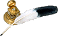

Read More About California Legends
Information on the Bandits Known as Joaquin

The image drawn of a Mexican Bandit by Charles Nahl - 1850.

The first books:
- The Life and Adventures of Joaquin Murietta, Celebrated California Bandit by John Rollin Ridge AKA Yellow Bird, 1854.
John Rollin Ridge: His Life and Works. by James W. Parins 1991.
Spain:
El Caballero Chileno by "Profesor" Acigar c1860s.
Vida y Adventures del mas Celebre Bandido Sonorense Joaquin Murrieta by Ireneco Paz 1908
Chile:
El Bandido Chileno by Roberto Hyenne 1906. (translated from the French)
Books that look into the legend:
- Bad Company by Joseph Henry Jackson, 1939.
- Joaquin; Bloody Bandit of the Mother Lode. The Story of Joaquin Murietta by William Secrest 1967
- The Real Joaquin Murieta: Robin Hood Hero or Gold Rush Gangster? by Remi Nadeau 1974.
- Joaquin Murrieta and His Horse Gangs by Frank F. Latta 1980
- The Legend of Joaquin Murrieta, California's Gold Rush Bandit
by James F. Varley 1995.
- Searching for Joaquin: Myth, Murieta and History in California by Bruce Thornton 2003.
- The Man From The Rio Grande by William B. Secrest 2005 READ THIS
- The Joaquin Band: The History behind the Legend by Lori Lee Wilson 2011 (This book exposes the media lies Gov. Bigler was creating about Joaquin to get the vote as governor of California. A must read!)
Other books to read:
- Life and Adventures of he Celebrated Bandit Joaquin Murrieta: His Exploits in the state of California Translated from the Spanish of Ireneo Paz by Frances P. Belle 1925.
- The Robin Hood of El Dorado by Walter Noble Burns 1932.
- The Truth About Joaquin Murietta by J. C. Cunningham 1938.
Articles:
- A Time of Terror by Carlo M. De Ferrari in the Chispa issue Jan-Mar 2003.
Many More:
- There are many more publications, etc. that bridge the topic of California's own legend of Joaquin Murieta. Many are highly fictional and even claim some sort of documented facts. I have only read the items above and therefore list them here as sources worth your reading pleasure.

Page created for the public by
Floyd D. P. Øydegaard.


Email contact:
fdpoyde3 (at) Yahoo (dot) com
A WORK IN PROGRESS,
created for the visitors to the Columbia State Historic park.
© Columbia State Historic Park & Floyd D. P. Øydegaard.